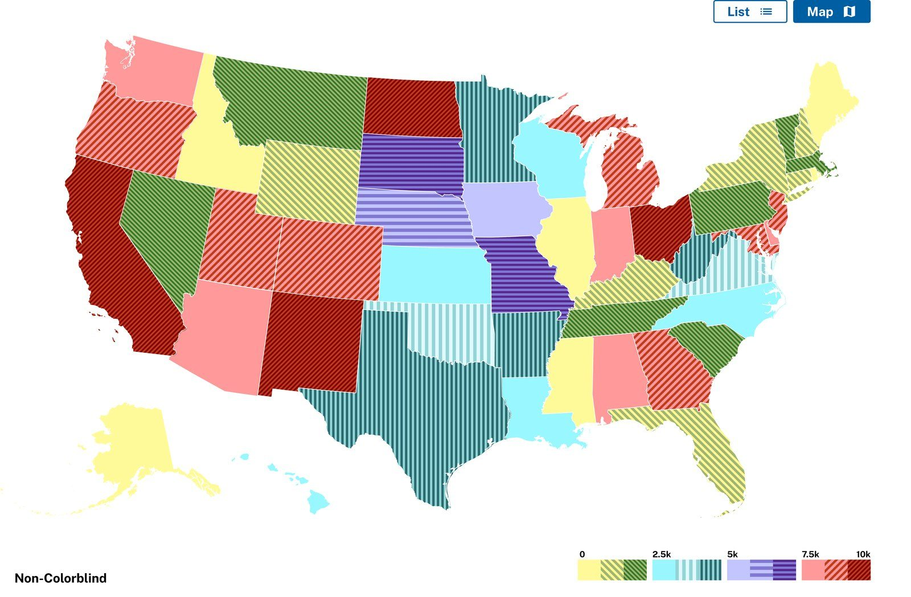

Pick a kind of color vision to see the same map through it.
Scroll sideways for more
Non-colorblind. Typical color vision, the map as designed.

The twelve steps, as delivered
Each band of three runs solid, light stripe, dense stripe. The solids carry the band by lightness, and the stripes carry the step.